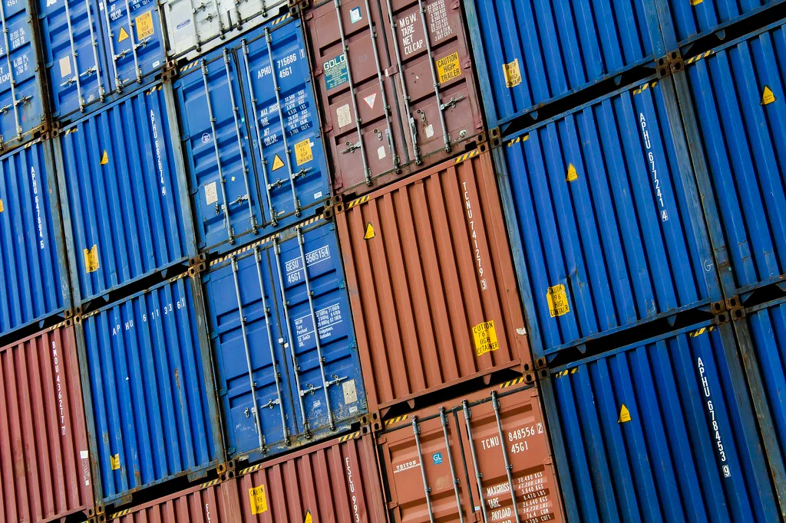
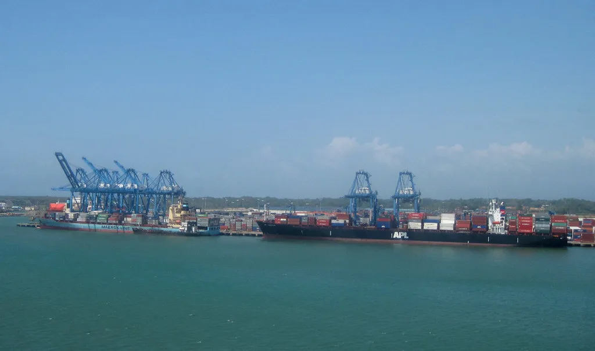

미국 무역대표부(USTR)가 한국을 포함한 14개 경제권을 상대로 이른바 '과잉생산 관세'를 부과하겠다고 예고했다. 무역법 301조에 근거한 조사 결과에 따른 조치로, 대상에는 한국과 중국, 일본, 유럽연합(EU) 등 주요 교역 상대가 대거 포함됐다. 다만 한국에는 기존 무역합의에서 정한 15% 상한이 유지되는 방향으로 제시돼, 당장 관세 부담이 크게 늘어나지는 않을 것이라는 관측이 우세하다.
USTR은 이들 14개 경제권의 제조업 부문에서 구조적인 과잉생산과 부당한 관행이 나타나고 있으며, 이것이 미국 상거래에 부담을 주고 있다고 판단했다. 생산 능력이 수요를 크게 웃도는 상황에서 남는 물량이 낮은 가격으로 미국 시장에 쏟아져 들어와 자국 산업을 위협한다는 논리다. 조사 초기에는 멕시코와 노르웨이도 대상에 올랐지만 최종 명단에서는 빠졌다. 미국은 그동안 특정 국가의 보조금이나 산업정책이 공급 과잉을 낳는다고 문제 삼아 왔는데, 이번에는 그 논리를 여러 교역국으로 넓혀 적용했다는 점에서 파장이 작지 않다.

한국과 관련해 가장 주목받는 부분은 세율이다. USTR은 한국, 일본, EU에 대해서는 기존 관세를 포함한 전체 관세율이 15%를 넘지 않도록 맞추겠다는 방침을 밝혔다. 지난 무역합의에서 정한 틀을 존중하겠다는 의미로 해석된다. 하지만 한국과의 협의나 기존 약속 이행이 만족스럽지 않을 경우 상한을 25%로 높일 수 있다는 단서도 함께 달았다. 사실상 협상 지렛대를 남겨둔 셈이다.
관세 계산 방식에도 눈여겨볼 대목이 있다. 이번 과잉생산 관세는 이미 시행 중인 강제노동 관련 관세 12.5%와 단순히 더해지지 않는다. 두 관세 가운데 더 높은 세율을 기준으로 상한 범위 안에서 부과되는 구조라는 설명이다. 또 자동차, 철강, 알루미늄처럼 무역확장법 232조가 적용되는 품목은 이번 조치의 영향을 받지 않는 것으로 알려졌다. 이들 품목은 이미 별도의 관세 체계로 관리되고 있어 중복 부과를 피하려는 취지로 보인다. 결국 한국 기업들에게는 어떤 품목이 새 관세의 적용을 받는지 꼼꼼히 따져보는 일이 먼저다.
중국에 대해서는 과잉생산 관세 20%가 제시됐다. 대만, 인도, 인도네시아 등에는 최고 25% 수준의 관세가 거론된 것으로 전해졌다. 미국과 별도의 무역합의를 맺은 국가와 그렇지 않은 국가 사이에 대우가 갈리면서, 결과적으로 기존 합의가 일종의 방패 역할을 하게 된 모양새다. 이번 조치가 미국의 무역 협상력을 높이기 위한 압박 수단이라는 분석이 나오는 것도 이 때문이다.

아직 확정된 것은 아니다. USTR은 내년 1월 5일까지 이해관계자의 서면 의견을 받고, 같은 달 25일 공청회를 열 예정이다. 이 과정에서 각국 정부와 업계의 의견이 반영돼 세율이나 대상 품목이 조정될 여지도 있다. 한국 정부와 기업들은 의견 제출 기간을 활용해 15% 상한이 유지될 수 있도록 대응에 나설 것으로 보인다.
수출 비중이 큰 한국 경제로서는 당장의 세율보다 불확실성이 더 큰 부담이다. 25% 상향 가능성이 열려 있는 한, 기업들은 투자와 생산 계획을 세우는 데 신중해질 수밖에 없다. 앞으로 이어질 한미 간 협의에서 기존 합의 이행을 둘러싼 조율이 얼마나 원만하게 이뤄지느냐가 관세 부담의 향방을 가를 것으로 보인다.